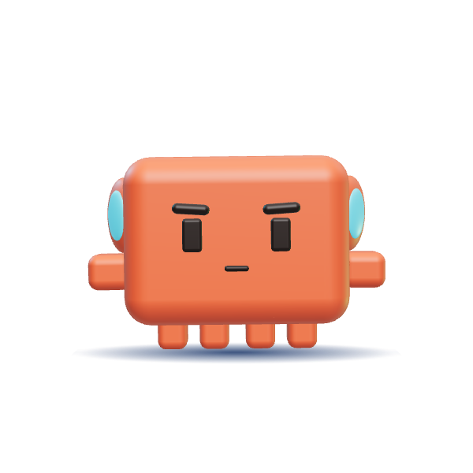

macOS
fastest- Engine
- Whisper on MLX
- GPU
- Apple Silicon, macOS 14+
- Speed
- ~1.2× clip length
- Installer
- bash + Homebrew
hear turns any audio or video file into a report Claude can read: who spoke, what they said, and how they said it. All on your own machine.

git clone https://github.com/kolinabir/claude-hear.git ~/.claude-hear && ~/.claude-hear/install.sh --warmBuilt on Whisper large-v3 turbo, CLAP, WeSpeaker, emotion2vec+, librosa, ffmpeg, MLX and faster-whisper.
Platforms
The installer picks the right speech engine for your machine. Everything else is identical everywhere.
Install
You need git and Claude Code. The installer adds ffmpeg and uv if they're missing, then puts the skill in ~/.claude/skills/hear, so every Claude Code session can use it. The warm flag downloads the models (~2.5 GB) right away.
# 1. get the code 2. install + download models $ git clone https://github.com/kolinabir/claude-hear.git ~/.claude-hear $ ~/.claude-hear/install.sh --warm
# in PowerShell > git clone https://github.com/kolinabir/claude-hear.git $HOME\.claude-hear > powershell -ExecutionPolicy Bypass -File $HOME\.claude-hear\install.ps1 -Warm
git -C ~/.claude-hear pull~/.claude-hear/uninstall.sh~/.claude-hear/uninstall.sh --purge--fast--separate--language engit -C $HOME\.claude-hear pull; .\install.ps1$HOME\.claude-hear\uninstall.ps1$HOME\.claude-hear\uninstall.ps1 -Purge--fast--separate--language enFAQ
Straight answers about privacy, speed and what Claude can and can't hear.
Not on its own: Claude has no audio input. hear gives Claude Code a way to listen. It turns an audio or video file into a text report (a word-timed transcript, speakers, delivery marks, emotion guesses and sound labels) plus a spectrogram image, and Claude reads those.
A report Claude can read: a transcript with a time and confidence for every word, speaker labels (S1, S2…) with each speaker's share of the talking, delivery marks for loudness, pitch, pauses, pace and rising or falling line ends, emotion guesses when they're confident, labels for sounds like music, laughter and applause, and a spectrogram image of the audio.
It runs five local stages, each in its own process: speech-to-text with Whisper large-v3 turbo first, then loudness and pitch with librosa, speaker fingerprints with WeSpeaker, emotion with emotion2vec+ and sound labels with CLAP together. The four light stages use less memory combined than Whisper, so peak memory is Whisper's, not the sum.
**word** is clearly louder, (word) is clearly quieter, ↑ and ↓ mean pitch well above or below that speaker's normal, ↗ and ↘ mean a line ends rising or falling, ‖0.8s‖ is a pause, [?] means Whisper was unsure, and {sounds happy 0.9} is an emotion guess.
No. Every model runs on your own computer. The only network use is the one-time download of about 2.5 GB of models.
macOS, Windows and Linux. Apple Silicon Macs run Whisper on the GPU with MLX. Windows, Linux and Intel Macs use faster-whisper, on an NVIDIA GPU when CUDA 12 and cuDNN 9 are installed, otherwise on the CPU. Windows and Linux support is in beta.
About 2.4 GB of RAM at peak, because Whisper runs first on its own and the lighter stages share less memory than it uses. On disk, about 2.5 GB of models and 2 to 3 GB of Python packages.
Anything ffmpeg can read, including mp3, wav, m4a, aac, flac, ogg, mp4, mov, mkv and webm.
On an Apple M4, a 40-second clip takes about 45 to 50 seconds for the full report and about 30 seconds with --fast. Without Apple Silicon or an NVIDIA GPU, transcription alone takes roughly the clip's length or more.
Yes. It labels each line S1, S2 and so on from a voice fingerprint and reports each speaker's share of the talking. Very short lines and lines over loud music are the least reliable, and the report flags those.
Two commands and a few minutes of downloads, and every Claude Code session on your machine can hear.
Install hear